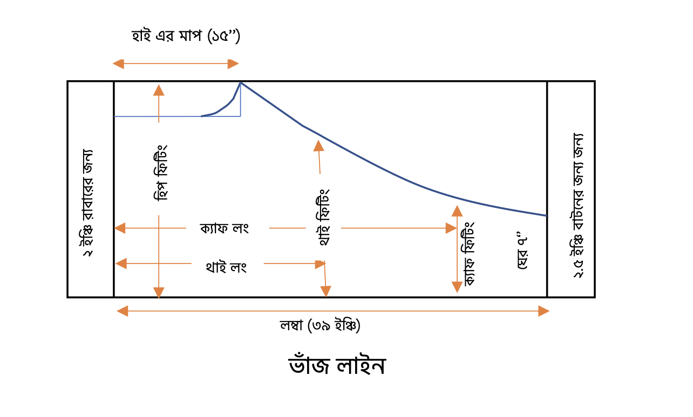

চুজ সেলোয়ার প্যাটার্ন ডায়াগ্রাম
নোটস: চুজ পায়জামায় মোট ৮ টি মাপ নিতে হয়:
১. লং/লম্বা – ৩৯: কোমড় থেকে টাখনু পর্যন্ত লম্বা।
২. থাই লং - ১৯: কোমড় থেকে থাই (হাটুর ২ ইঞ্চি উপরে) (থাই লং)
পর্যন্ত লম্বা।
৩. ক্যাফ লং - ৩০: কোমড় থেকে হাঁটু এবং টাখনুর মাঝামাঝি (ক্যাফ
লং) পর্যন্ত লম্বা।
৪. হিপ এর ফিটিং - ৩৬: তিন আঙুল দিয়ে পরিমাপ করতে হবে। এটার সাথে ৬
ইঞ্চি (পুরো ফিটিং) অথবা ৮ ইঞ্চি (লুজ) যুক্ত করতে হবে। তাহলে ৩৬ + ৮ =
৪৪। যেহেতু কাপড় ৪ ভাঁজ, সেজন্য ভাঁজ লাইন থেকে ৪৪/৪ = ১১ ইঞ্চি + ১ ইঞ্চি
সেলাই = ১২ ইঞ্চি পরিমাণ নিতে হবে।
৫. থাই ফিটিং - ১৬: ১ আঙুল দিয়ে পরিমাপ। এটার সাথে ৩ ইঞ্চি (২
ইঞ্চিও দেয়া যায়) যুক্ত করতে হবে। অর্থাৎ ১৬ + ৩ = ১৯ /২ = ৯.৫ + ১ ইঞ্চি
সেলাই = ১০.৫ ইঞ্চি পরিমাণ নিতে হবে।
৬. ক্যাফ ফিটিং - ১১: ১ আঙুল দিয়ে পরিমাপ। এটার সাথে ৩ ইঞ্চি (২
ইঞ্চিও দেয়া যায়) যুক্ত করতে হবে। অর্থাৎ ১১+৩ = ১৪/২ = ৭ + ১ ইঞ্চি সেলাই
= ৮ ইঞ্চি পরিমাণ নিতে হবে।
৭. ঘের – ১০:১০/২ = ৫ + ১ ইঞ্চি সেলাই = ৬ ইঞ্চি পরিমাণ নিতে হবে।
৮. হাই – ১৫